«Настоящая коллаборация — это серьёзная битва»
Сораяма сам определил своё отношение к работе с компаниями в интервью The Talks: он разделяет случаи, когда бренд лишь лицензирует старые рисунки, потому что они «популярны или в тренде», и настоящее партнёрство. «Я считаю, что настоящая коллаборация — это когда компания и художник создают устойчивые, вечные отношения… Настоящая коллаборация — это серьёзная битва. Если я что-то делаю, я говорю им сто процентов того, чего хочу. И когда они предлагают нечто ещё лучшее, я по-настоящему счастлив»
Это не поза. Работая с PUMA, он впервые в карьере не просто предоставил арт, а перерисовал сам логотип бренда — кота с новой динамикой и изменёнными пропорциями хвоста. «Я не хотел просто отдать свою работу и уйти. Я хотел сделать нечто практичное, чем мы могли бы гордиться» Он штурмует дизайнеров правками — и признаётся, что «человек, который будет исправлять вечно, — это жестоко по отношению к окружающим». Но именно поэтому, по его словам, качество вещей оказывается таким высоким. «Когда делаешь это в моём возрасте, не хочется просто пройти через движения. Даже если я умру, я всё равно хочу соревноваться»
Философия его метода сформулирована ещё жёстче: принимая заказ, в первую очередь нужно сделать вещь интересной, беспрецедентной, своим шедевром — «а деньги придут потом. Я не понимаю, почему люди ставят деньги на первое место»
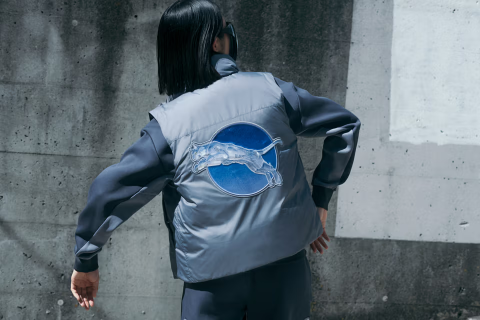
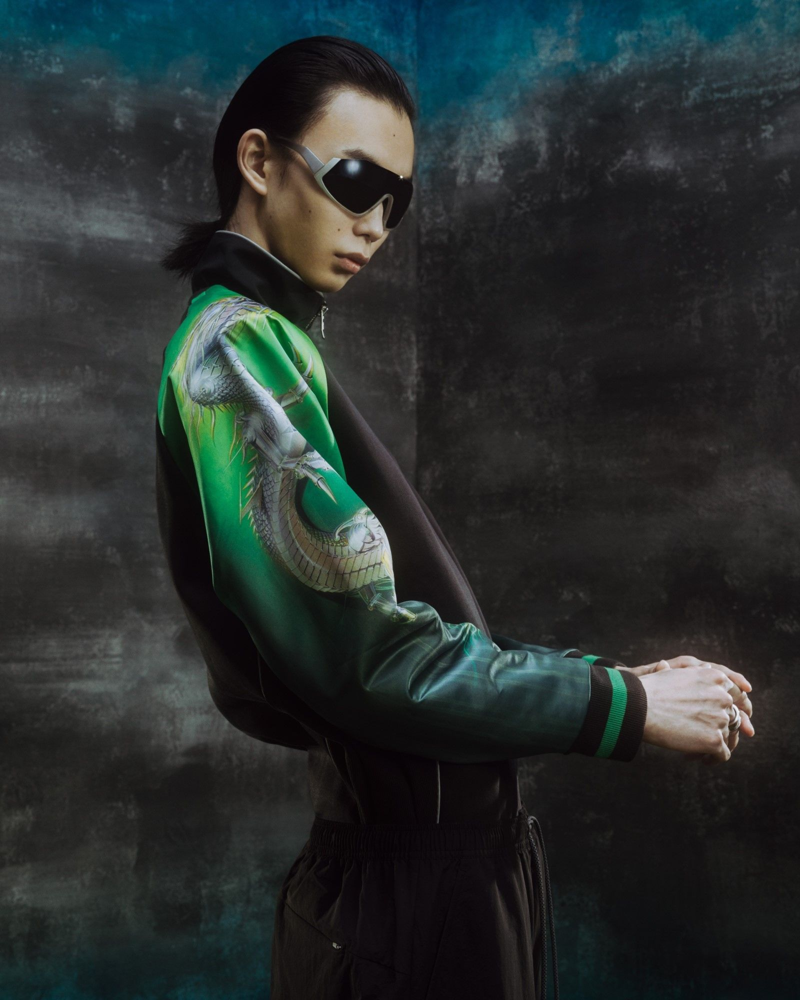
Эстетика, которую он вносит: фетиш, свет и эротика машин
Что именно получает бренд? Триада, над которой Сораяма работает полвека: металл, отражение, прозрачность. «У меня фетиш на металл, и эта фраза — моя любовь и восхищение им. Это также омаж Мэрилин Монро, известной как платиновая блондинка» — так он объяснил концепцию «Platinum Dream» для капсулы со Stella McCartney, в которой его хромированные фигуры соединились с фирменными клубникой и отсылками к японским сувенирным курткам сукадзян.
Свой метод он называет «суперреализмом» и описывает его как техническую задачу: «насколько близко можно подойти к объекту» Знаменитое наблюдение о блеске: «Говорят, только вороны и люди приходят в восторг от блестящего. Поэтому я создаю отражательность и прозрачность в своей работе. В видео такие эффекты сделать легко, но не на плоской поверхности» Именно здесь кроется причина, почему его образы так хорошо «переезжают» в трёхмерные медиумы: вся его живопись — иллюзия объёма, металла, воздуха.
«Я считаю, что настоящая коллаборация — это когда компания и художник создают устойчивые, вечные отношения… Настоящая коллаборация — это серьёзная битва. Если я что-то делаю, я говорю им сто процентов того, чего хочу»
Хадзимэ Сораяма
Иллюстратор
Карта медиумов: от аэрографа до гигантских экранов
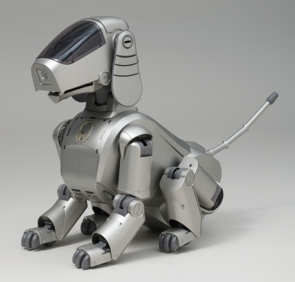
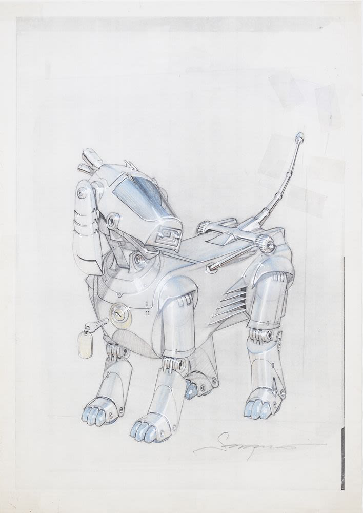
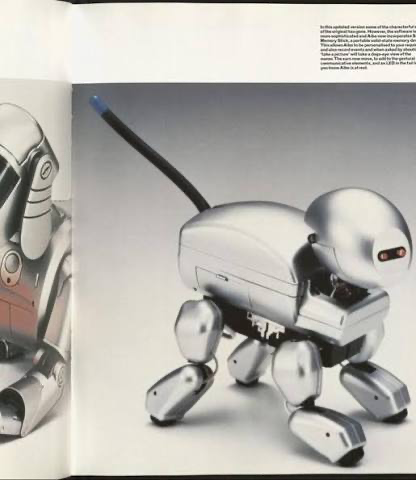
Эротика для него — не провокация, а естественный материал: «Секс всегда в основе всего, в нашем желании жить» А глянцевых гиноидов он считает богинями, а не секс-объектами. При этом сам он категорично отказывается от статуса художника: «Я работаю в индустрии развлечений. Я никогда не думаю о себе как об художнике, потому что не знаю, что такое "искусство"» И добавляет: «Я — развлекатель, и это развлечение для меня самого»
Плоскость. Всё началось с иллюстрации: первый робот, нарисованный для рекламы виски Suntory в 1978 году, стал ДНК всего дальнейшего.
Промышленный дизайн. В 1999-м Sony поручило ему концепт робота-собаки AIBO — проект получил главную японскую дизайн-премию и попал в коллекцию MoMA. Это важный прецедент: эстетика Сораямы существует не на бумаге, а в функционирующей технике.
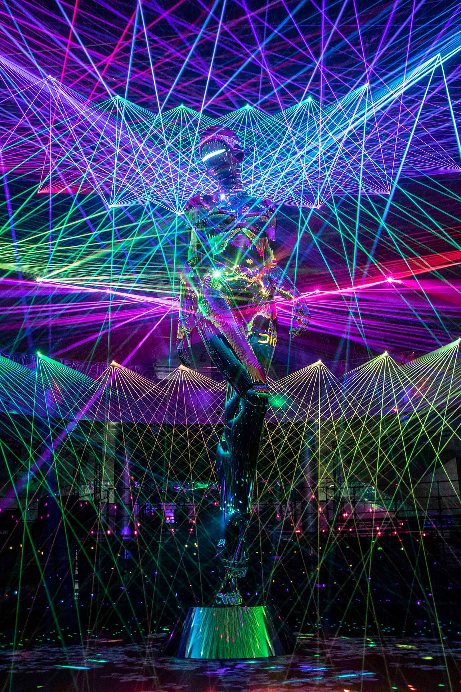
«Я никогда раньше не делал статую таких размеров. Меня взбудоражила идея сделать что-то новое»
Хадзимэ Сораяма
Иллюстратор
Подиум, одежда и объекты
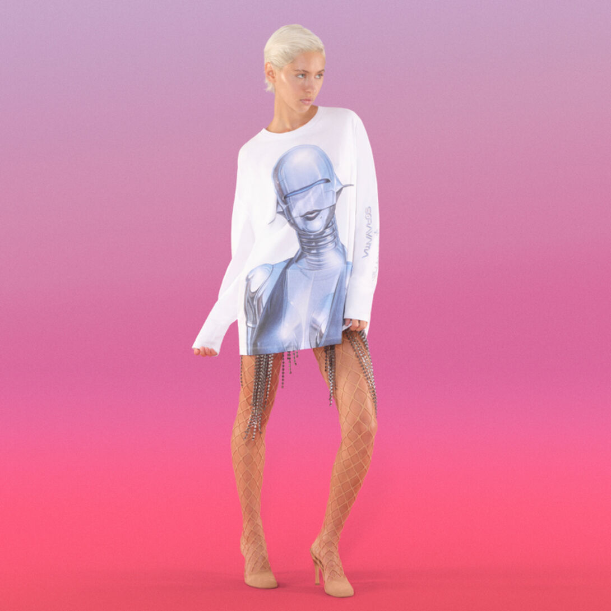
Подиум как театр. Самый громкий кейс — Dior Men Pre-Fall 2019 в Токио, где Ким Джонс поставил 12-метрового хромированного женского робота весом почти тонну. Скульптуру вырезали из пенопласта и 20 дней покрывали слоями алюминиевой краски. Сораяма признался: «Я никогда раньше не делал статую таких размеров. Меня взбудоражила идея сделать что-то новое» Сам он назвал Джонса «переводчиком между модой и искусством», а задачу — сложной: «было непросто перенести моё искусство и его контекст в моду, но я доверил ему результат»
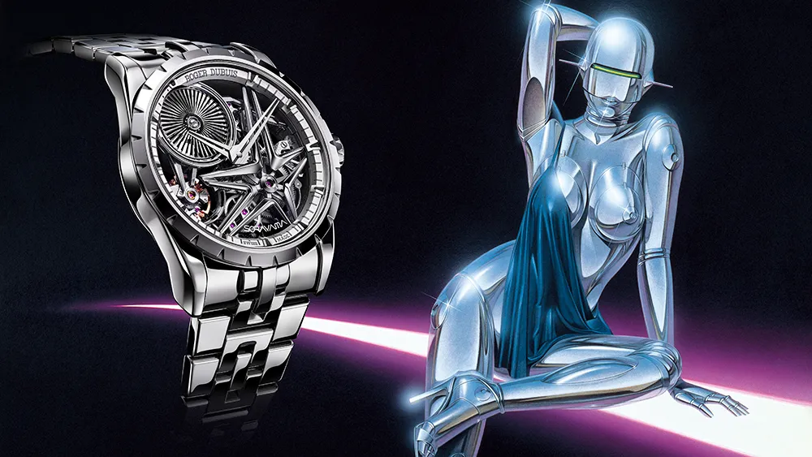
Одежда и объекты. Puma, Li-Ning, Stella McCartney, Mizuno, Roger Dubuis (часы Excalibur), Juun.J — здесь он мыслит не принтом, а материалом. Для PUMA он требовал, чтобы «ткань блестела при отражении света, а рисунок выглядел объёмным», изучая сукадзаны с нуля: «это вызов, уникальный для одежды. Когда меняется медиум, рождаются новые открытия»
Публичное искусство и иммерсивные инсталляции. Тот самый 12-метровый робот с показа Dior затем работал как самостоятельный паблик-арт — на выставках в Шэньчжэне и Токио. Ретроспектива «Light, Reflection, Transparency» добавляет Mirror Maze (зеркальный лабиринт с отражающими скульптурами), инсталляцию-аквариум с его знаменитой «самой сексуальной рыбой» и 4D-видеоинсталляцию на технологиях Sony, синхронизирующую изображение, звук и вибрацию.
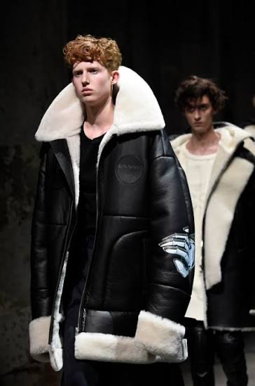
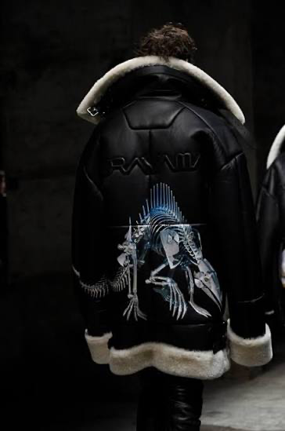
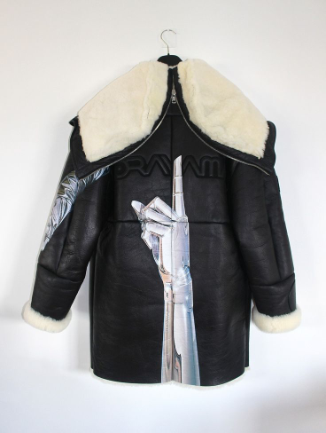
И вот здесь — про Sphere. Честно: подтверждённой коллаборации Сораямы с лас-вегасской Sphere нет — но сама эта медиа-среда выглядит написанной под его эстетику. Сфера со своей эксосферой из 580 000 квадратных футов LED-панелей, самым большим в мире внешним экраном и иммерсивным 16K-залом с тактильными креслами — это буквально воплощение его триады «свет, отражение, прозрачность» в архитектурном масштабе. Образ хромированного гиноида, заполнивший полусферу, — следующий логичный шаг, который уже угадывается в его 4D-инсталляциях с Sony: там, где блеск больше не имитация на плоскости, а физическое излучение пикселей.
Почему это работает
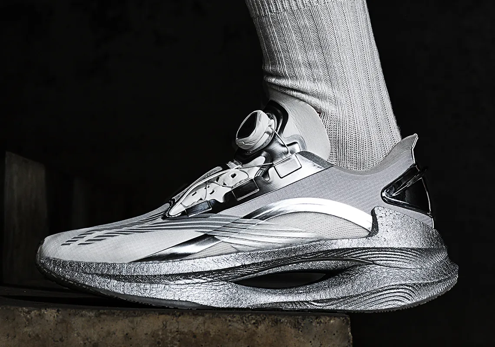
Сораяма однажды сформулировал цель так: «Я делаю искусство, чтобы удивлять людей» А удивление, по его логике, рождается только из новизны — «бытие творческим означает удивлять людей тем, чего не существует». Поэтому каждая его коллаборация — не повтор мотива, а расширение медиума: аэрограф → собака-робот → гигантская скульптура → одежда, которая светится при движении → зеркальный лабиринт → 4D-кинозал. Бренды платят ему не за хромированных женщин — их можно скопировать. Они платят за метод: прийти, взять их логотип, их ткань, их здание и заставить это блестеть так, как блестит только у него.
Читайте также: